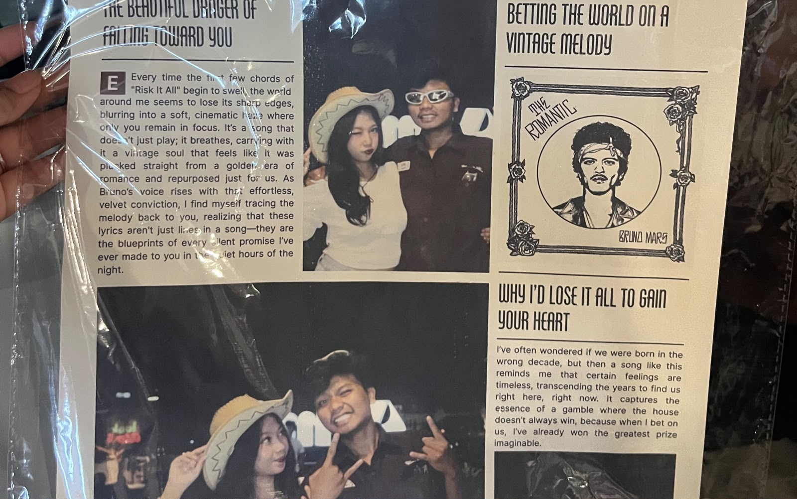
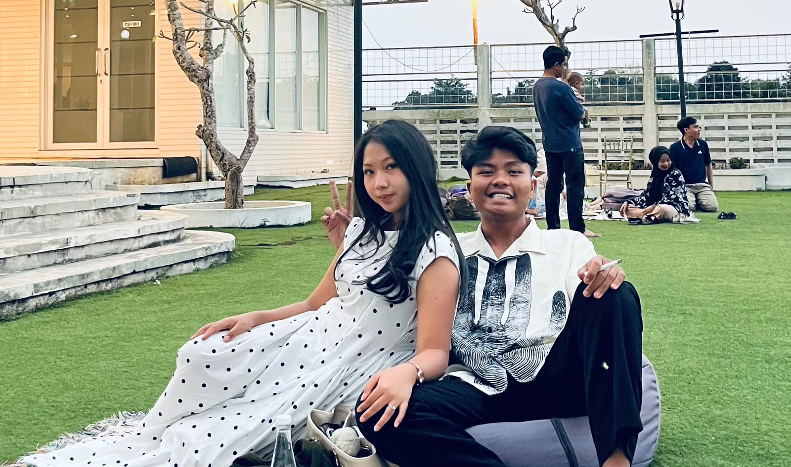
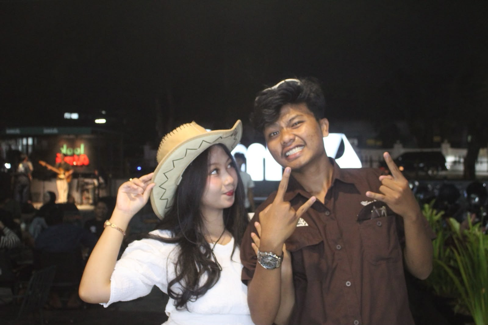
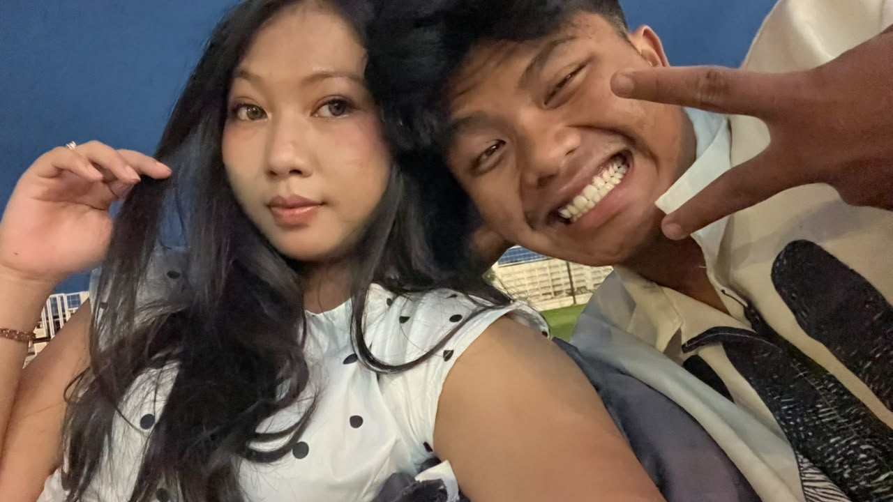

SEBUAH PESAN UNTUKMU
hallo sayang aku ramdan ada surat dari aku nih
❤️Ada sesuatu yang ingin aku sampaikan dari hati. Maukah kamu membuka surat kecil ini?
DARI HATI YANG TULUS
Maafkan Aku ❤️
Hai, sayangku. ❤️
sayang Aku ingin meminta maaf atas kesalahan yang sudah aku lakukan. Aku sadar mungkin ada perkataan atau sikapku yang membuatmu kecewa, sedih, atau merasa tidak dihargai.
Aku tidak ingin membenarkan kesalahanku dengan alasan apa pun. Perasaanmu penting, dan aku ingin belajar mendengarkanmu dengan lebih baik.
Aku tahu kata maaf saja tidak cukup. Aku ingin membuktikannya melalui sikap dan perubahan yang nyata, bukan sekadar janji.
Kalau kamu masih membutuhkan waktu, aku akan menghargainya. Aku berharap kita bisa berbicara dengan tenang dan saling memahami.
Terima kasih karena sudah menjadi bagian berharga dalam hidupku. Maafkan aku, ya. ❤️
Dengan tulus,
seseorang yang sedang belajar menjadi lebih baik
.RAMDAN 💗
POTONGAN KENANGAN
Kenangan Kita
Setiap foto menyimpan cerita yang berharga.




love youuu sayang
PUTAR LAGU INI
Lagu untuk Kita
Ada lagu yang ingin aku bagikan denganmu. Semoga lagu ini menyampaikan perasaanku. ❤️
Tekan tombol Play pada pemutar Spotify untuk mendengarkan lagu.
PESAN TERAKHIR
Satu Hal Lagi...
Aku tidak bisa mengubah masa lalu, tetapi aku bisa belajar dari kesalahan dan berusaha menjadi lebih baik.
Terima Kasih
Terima kasih sudah meluangkan waktu membaca pesan ini. Aku berharap kita bisa saling memahami dan berbicara dengan hati yang lebih tenang.
Maafkan aku, ya. 💗